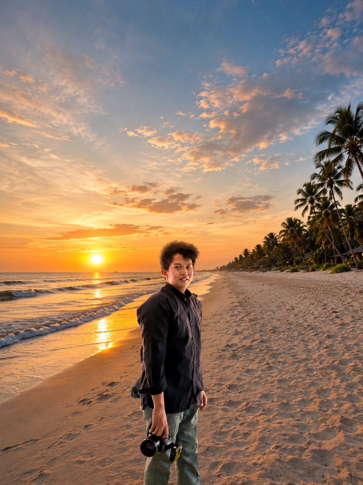

IT Student | Graphic Designer | Entrepreneur
"Anak IT, eksekutor bisnis mandiri, atau komandor media planner ?" Saya mengintegrasikan ketiganya. Fokus utama saya adalah memecahkan masalah komunikasi digital menggunakan desain grafis sinematik, manajemen media taktis, dan logika rekayasa web.
Dari mengarsiteki sistem publikasi makro di organisasi mahasiswa, memimpin jalannya manajemen elektoral, hingga membangun ekosistem visual bisnis mandiri seperti @_mahkota_kopi dan @doubles.capture, saya tidak sekadar membuat konten, saya membangun sistem yang berdampak luas.

Eksplorasi bisnis mandiri, visual fotografi, dan seni digital.
Doubles.Capture adalah penyedia jasa layanan kreatif yang bergerak di bidang dokumentasi visual, spesialis dalam menangkap momen-momen berharga melalui lensa fotografi dan videografi. Mengusung pendekatan estetika yang kuat, sistematis, dan bernuansa sinematik, Doubles.Capture tidak sekadar mengambil gambar, melainkan mengabadikan narasi, emosi, dan esensi dari setiap peristiwa mulai dari event, kegiatan konseptual, hingga dokumentasi personal. Kami percaya bahwa setiap momen memiliki dua sisi berharga: keindahan yang tertangkap oleh mata, dan cerita mendalam yang abadi di dalamnya.
Lihat Galeri Foto →Kedai Mahkota Kopi 2 adalah ruang komunal dan tempat berkumpulnya cita rasa kopi berkualitas yang disajikan dalam atmosfer yang hangat, santai, dan bersahabat. Menjadi destinasi favorit untuk berbagai kalangan mulai dari mahasiswa yang mencari ruang produktif untuk berdiskusi, pegiat organisasi, hingga komunitas kreatif kedai ini menawarkan aneka varian menu kopi dan non kopi yang ramah di kantong tanpa mengesampingkan rasa. Lebih dari sekadar tempat menikmati kopi, Kedai Mahkota Kopi 2 adalah wadah bertemunya ide, ruang untuk bertukar cerita, dan rumah bagi kenyamanan di setiap cangkirnya.
Kunjungi Instagram →Perancangan identitas visual, poster kegiatan, dan tata letak media publikasi organisasi yang sistematis untuk memperkuat penyampaian pesan di ruang digital.
Apresiasi dan penghargaan resmi atas kontribusi serta gagasan ilmiah.
Penghargaan tingkat provinsi dari Dispora atas dedikasi aktif menginisiasi solusi pembangunan berkelanjutan berbasis teknologi dan gerakan masyarakat lokal.
Kompetisi gagasan ilmiah tertulis regional yang menguji ketajaman analisis, metodologi pemecahan masalah, dan penulisan terstruktur mengenai generasi muda.
Linimasa dedikasi organisasi, manajemen birokrasi, dan diplomasi luar negeri.
Bergerak di lini diplomasi eksternal dan kebijakan makro kampus. Membangun jaringan strategis antar-lembaga serta mengawal komunikasi taktis organisasi di luar lingkungan universitas.
Memegang kendali penuh atas tata kelola finansial, penyusunan anggaran strategis, dan transparansi arus kas guna mendukung stabilitas serta keberlangsungan roda pergerakan komisariat.
Memimpin sebagai komando tertinggi penyelenggaraan pesta demokrasi kampus. Bertanggung jawab penuh atas regulasi, netralitas sistem, dan pengambilan keputusan krusial demi menyukseskan PEMILWA yang akuntabel.
Mengarsiteki arah komunikasi digital dan memimpin tim kreatif dalam memproduksi aset visual publikasi makro organisasi agar pesan strategis tersampaikan secara taktis dan berdampak luas.
Mengeksekusi publikasi visual kreatif dan syiar digital Komisariat. Menerjemahkan gagasan pergerakan inklusif organisasi menjadi konten media sosial yang informatif dan memiliki estetika tinggi.
Menjadi motor penggerak birokrasi, tata kelola administrasi, dan pusat dokumentasi internal. Menanamkan fondasi awal kedisiplinan makro dan kepemimpinan komunal selama masa studi residensial.